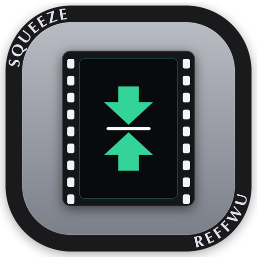
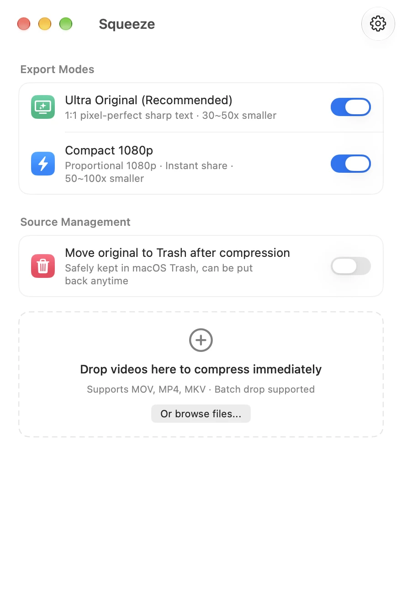
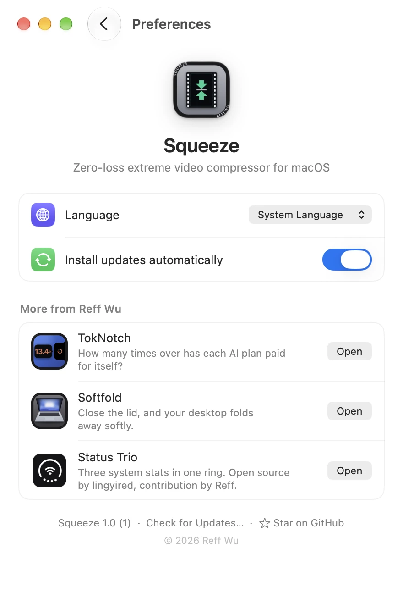

Squeeze
Zero-loss extreme video compressor for macOS.
macOS screen captures balloon into hundreds of megabytes. Squeeze shrinks them 30x to 100x while keeping Retina text 1:1 pixel-perfect.


30x to 100x smaller
Tuned specifically for screen captures. Dynamic rate control strips frame noise while keeping text pin-sharp.
Pixel-perfect 1:1 Retina
Maintains native 4K/Retina display resolution. Code, terminals, and UI remain tack-sharp without blur.
Local, fast & safe
Hardware acceleration for Apple silicon with seamless Intel CPU fallback. Safely moves original videos to Trash.
Requires macOS 14 or later. Apple Silicon and Intel.